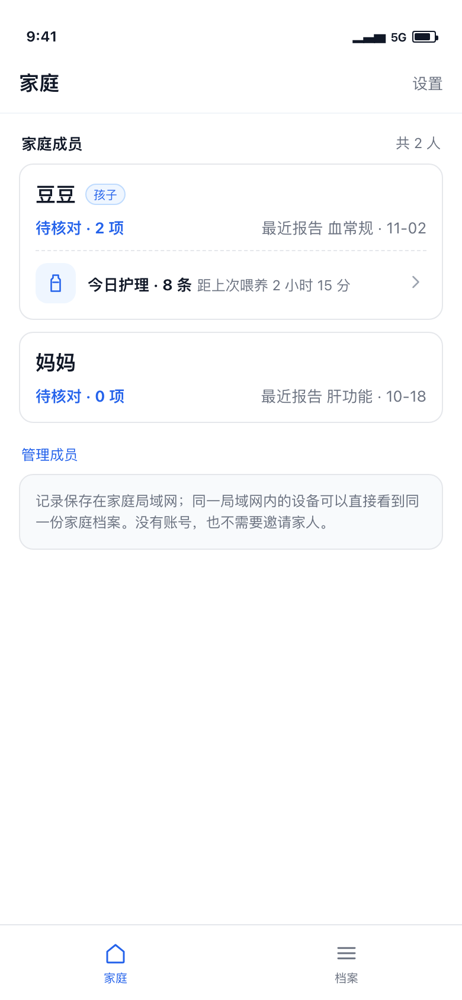
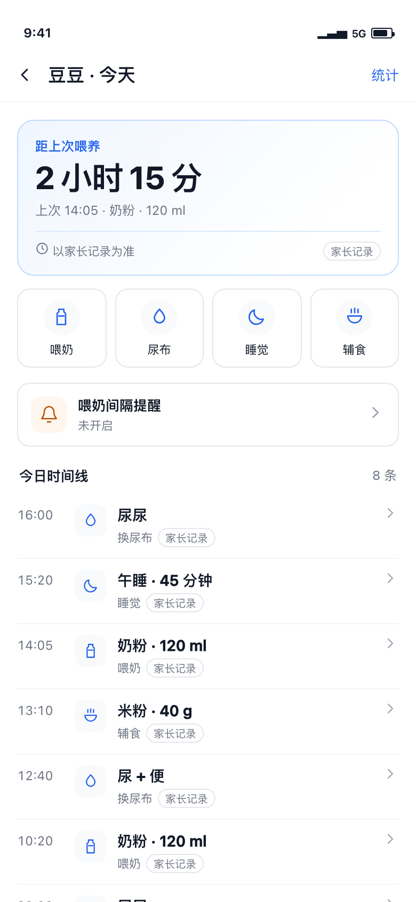
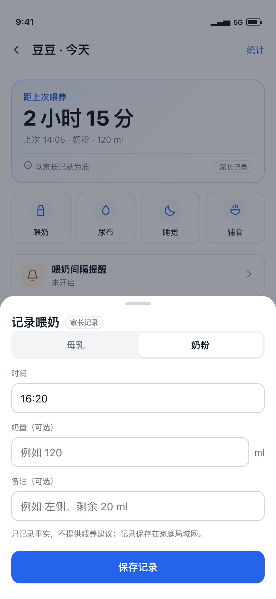
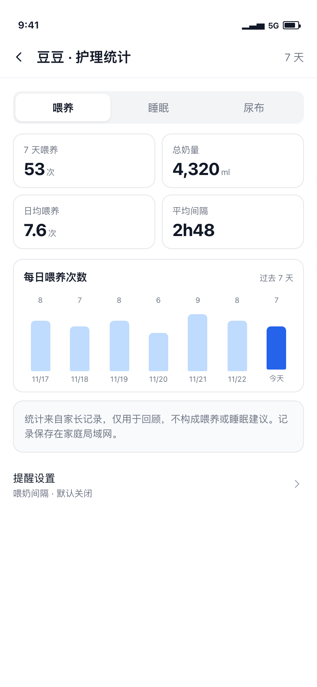
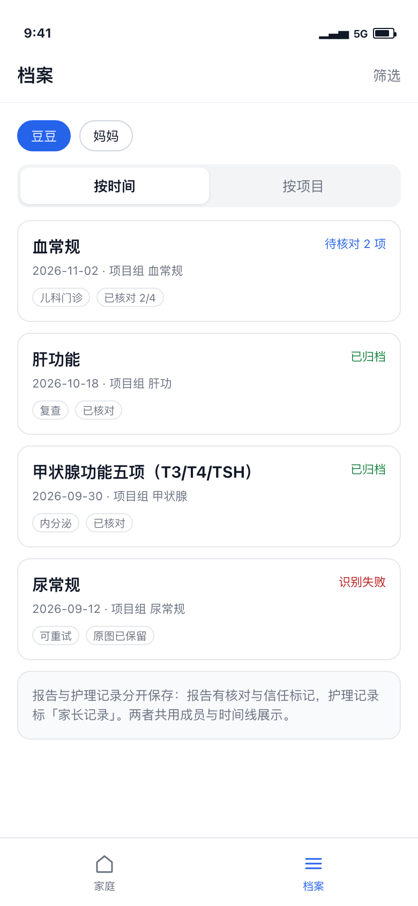
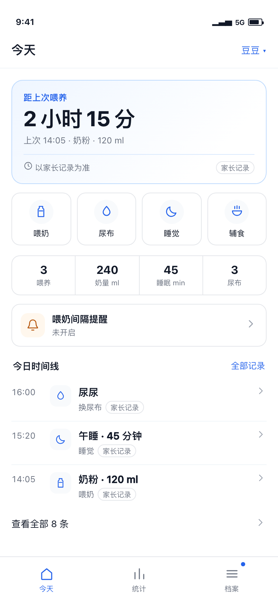
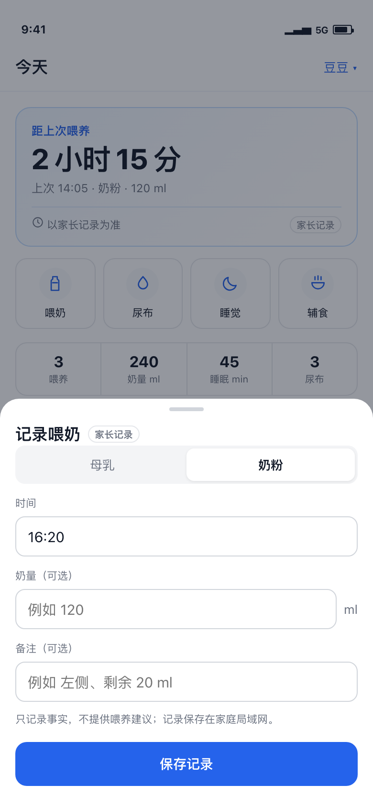
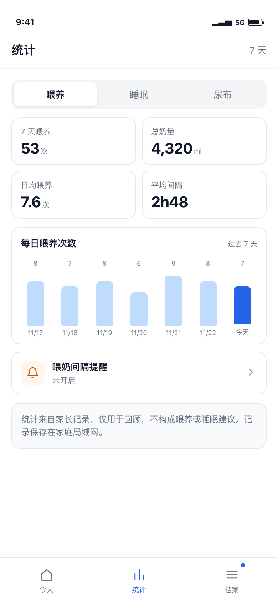
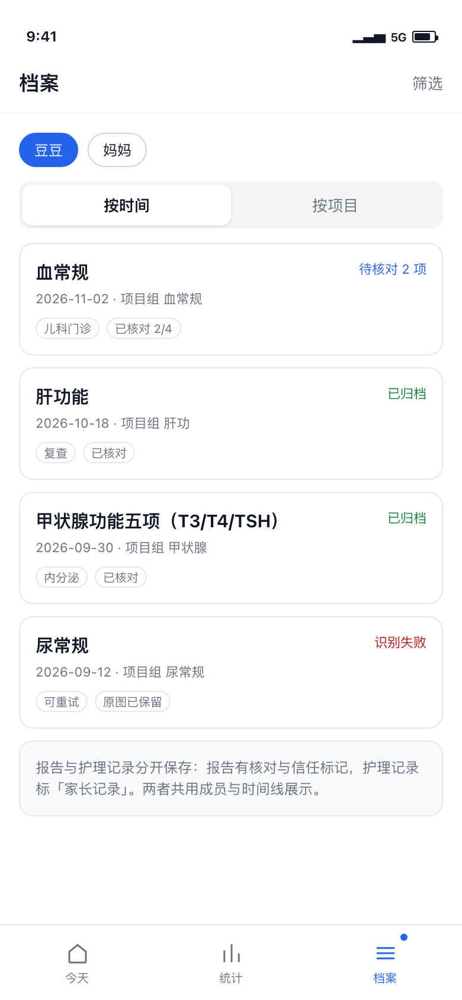
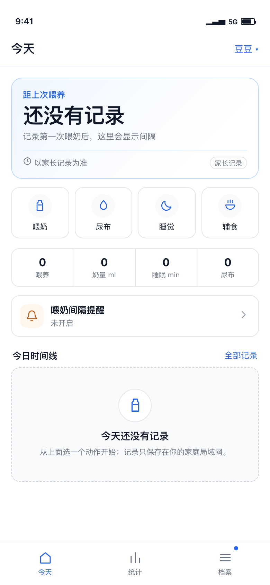

A家庭（首页）
报告档案仍是首页；护理是成员卡里的一行次级入口。
同一套护理记录能力，两种产品重心。两套都包含统计与提醒；差别只在首页是谁、报告退到哪一层。 数据为合成样例；不含账号 / 云同步，记录保存在家庭局域网。

报告档案仍是首页；护理是成员卡里的一行次级入口。

同一套护理能力，但需要先选成员、再进入；统计 / 提醒在页面内。

默认现在、数量可选、先记后改；记录标「家长记录」。

统计是护理模块的次级页面，从成员今天页进入。

喂奶间隔提醒默认关闭；只在本机生效，不承诺准时。

报告、核对、识别失败重试仍是主路径；护理不改变档案心智。

护理记录成为首页：距上次喂养、四个快捷动作、今日摘要、提醒。

首页一键进入；同样的字段与「家长记录」标签。

统计是底部一级 tab；喂养 / 睡眠 / 尿布切换。

提醒是首页卡片 + 一级设置；仍然是本机、可选、默认关闭。

报告退到第三个 tab；报告与护理记录分开保存、共用成员。

第一次打开：先引导记录；没有记录时不显示假数据。
优点：不改变「可信档案」的产品心智，报告与解读仍是主角；缺点：记录路径多一步，日常打开理由弱，护理数据可能记不起来。
优点：记录路径最短，每天有打开理由；缺点：报告 / 分析被降级，产品更像 tracker，和品类标配拼功能完整度。
A 的成员卡可以放更强的「今日护理」摘录；B 的首页可以放报告待办角标。先选主重心，再谈混合，不要一次改两个层级。